The demo, under two minutes: Stitch fixes a broken network with the internet down, teaches a new app on screen, and IT watches the rollout land in Stitch HQ. Everything on a screen is the real app.
Software changes every week, and AI is making it faster. A few people at a company learn each new tool. Everyone else keeps doing it the old way, and the company keeps paying for software its people never learned to use. Stitch is a small helper that lives on every employee's Mac. When IT rolls out a new tool, Stitch tells each person, installs it, and walks them through it by hopping from button to button on their own screen. Ask him a question and he answers from the company's own docs.
Every part of Stitch that thinks runs on the laptop: the language model, speech-to-text and the voice. Turn the wifi off and it keeps working. We built it overnight at the Local AI Hackathon at Cornell (November 14 to 15, 2026). It was one of the finalist teams that demoed live to the sponsors, and I presented it to more than 60 attendees and judges.
The problem
I came in with the idea and spent the start of the hackathon on the research behind it. The numbers say the same thing three ways: companies buy more software than their people can absorb, and there aren't enough IT people to teach it.
| Stat | Source |
|---|---|
| 53% of software licenses go unused or underused | Zylo, 2026 |
| 1 : 75 IT staff to employees at the median company | Pave, 1,856 companies |
| 49% of employees lose 1 to 5 hours a week to IT issues | Unisys, 2023 |
The diagnosis: the bottleneck isn't buying or installing software, it's teaching it. One IT person can't sit with 75 people every time a tool changes, so the fix has to live on every computer. And because IT problems are often network problems, and many companies (law, finance, healthcare) can't send screens or client files to a cloud AI, the helper has to run on the device.
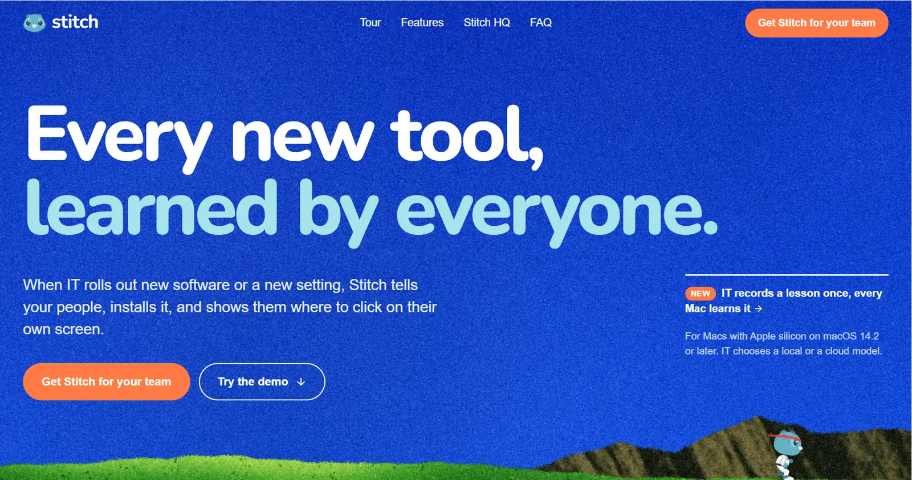
Explore the website. It has an interactive tour of a Mac where Stitch notifies, teaches, answers and reports.
What Stitch does
- Brings new software to everyone. IT writes a rollout once. Each Mac it targets gets a notification, Stitch installs the app from the company's software portal, and the rollout waits in his chat card until it's done.
- Teaches it on screen. Stitch hops to each button in the real app, rings it, says what it does, and moves on when you click it.
- Answers from the company's docs. Click him or press Option+S and type or ask out loud. Answers cite the doc sections they came from, and if the docs don't cover it, he says so instead of guessing.
- Does small jobs for you. Ask him to do something simple and he does it in the app in front of you, then checks that it worked. Option+A asks about any part of the screen.
- Reports back to IT. Every laptop reports where it is in each rollout, so Stitch HQ shows who's caught up and who needs help.
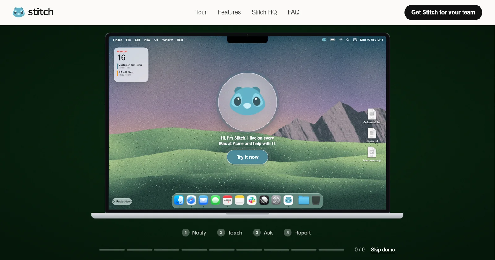
The website's tour: four steps (notify, teach, ask, report) on a model of a Mac.
The harness: seeing the screen and pointing at it
Stitch is built on Clicky, an open-source (MIT) macOS companion that sees your screen, talks, and points at things. I forked it with git and replaced every cloud call. Clicky sent screenshots to a cloud model and got back pixel coordinates to point at. Stitch instead reads the front app's controls through the macOS Accessibility API, the interface screen readers use, as a short list of each control's role and label.
- Find the real button. Each lesson step names its target (for example the "New Expense" button). Stitch looks it up in the front window and gets its exact position on screen, wherever the window is.
- Point and highlight. The character flies to that control and holds there with a pulsing ring around it, with the step written beside it.
- Learn by doing. A global click monitor sees when you click the ringed control and moves on to the next step. If the button isn't on screen yet, Stitch says so and keeps looking.
Accessibility labels are far more reliable than guessing from a screenshot. In the team's benchmark on 30 screens, pointing from pixels alone landed 10% of the time, while giving the model the list of labelled controls landed 90% of the time.
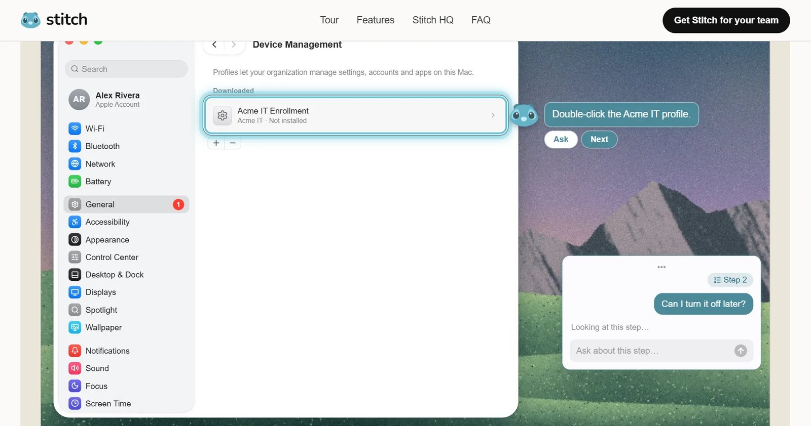
A walkthrough step: the target control is ringed, Stitch says what to do, and you can ask about the step without leaving it.
Nudges: noticing the old habit
Every rollout in the company brain lists the old way of doing the job as triggers: an app name, and optionally words in the window title. For the demo's expense rollout, that's Excel or Numbers with a window titled "Expenses".
- Watch. Once a second, Stitch reads the frontmost app's name and its focused window's title through the Accessibility API. It only acts when that pair changes, so it costs nothing measurable.
- Match. A plain rules engine checks the pair against the active rollouts meant for this laptop's team. No model is involved, so the match is instant and repeatable.
- Redirect. On a match, Stitch shows a nudge card: "We're retiring the expense spreadsheet. Want me to set up Acme Expenses and show you how?" Yes installs the new app, opens it, and starts the walkthrough.
Later that night the team decided interrupting people inside an app they were using was too pushy. New rollouts now arrive as a normal Mac notification, with reminders that come twice as often each time until the walkthrough is done, and the same trigger watch quietly counts opens of the old tool for IT ("Sam opened the old spreadsheet twice").
Why it has to be local AI
The hackathon's rules required the Bonsai models, and the demo turned the wifi off to prove nothing was in the cloud. I set up Bonsai-2 4B to run on each laptop through a local server that speaks the standard chat API, so the app works the same online and offline and the model can be swapped by changing one URL.
| Where | Model | Job |
|---|---|---|
| Employee Mac | Bonsai-2 4B | Answer questions grounded in one lesson and the cited doc sections; decide whether to answer or act |
| IT's Mac (HQ) | Bonsai-2 9B | Draft a rollout from one sentence; summarize adoption in plain English |
| Employee Mac | Argmax WhisperKit | Speech-to-text for spoken questions |
| Employee Mac | Argmax TTSKit | Optional spoken answers |
On an M5 Pro, the 4B model starts answering in about 146 ms and writes about 127 tokens a second. Small models make things up when asked to remember policy, so Stitch never asks them to. A rules engine picks at most one lesson and two doc sections, and the model only puts them into words, which keeps every prompt under about 1,500 tokens.
Company knowledge lives in a git repo, the "company brain": rollouts and lessons as YAML, docs as Markdown, and one status file per laptop. Pushing a commit pushes a policy to the whole company, with an audit trail and rollback for free. Git sync is the only thing that uses the network.
Stitch HQ
The IT and CEO view. Describe a change in plain English, Bonsai 9B drafts the rollout, push it to every laptop, then watch it land: who's enrolled, who's been notified, who's overdue, and how much of the software you pay for gets used. I designed the dashboard's charts and look.
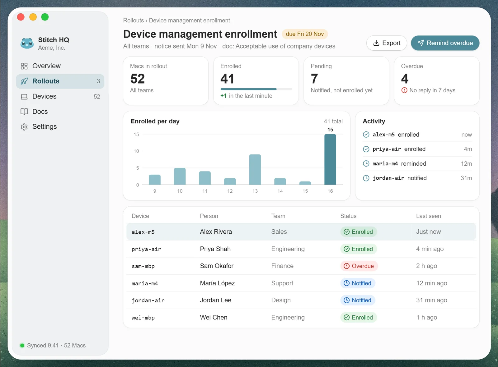
One rollout in Stitch HQ: every Mac reports back, so IT sees who's enrolled, who's pending and who's overdue. (Sample data.)
The pitch
I made the branding, the pitch deck, the market analysis and the business model, and I wrote and directed the demo video. The deck ties Stitch to the hackathon's theme, "Recreate": we recreated IT as an expert on every laptop, and recreated a cloud assistant to run fully offline.
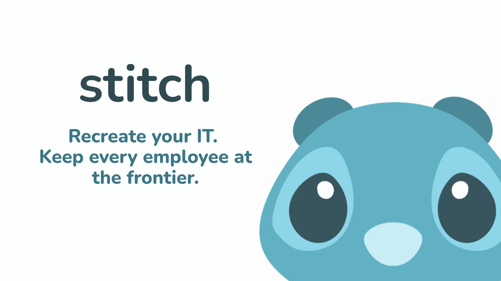
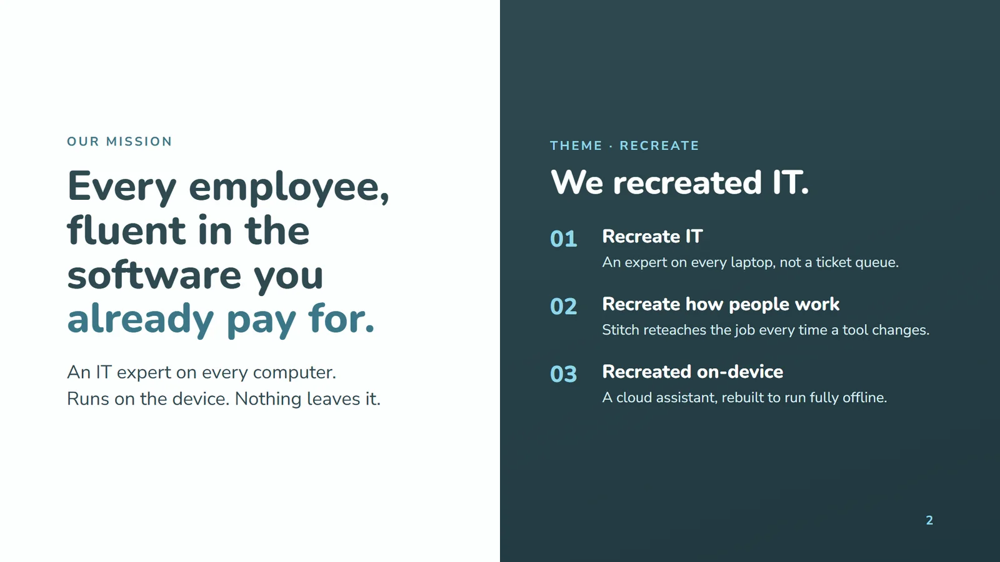
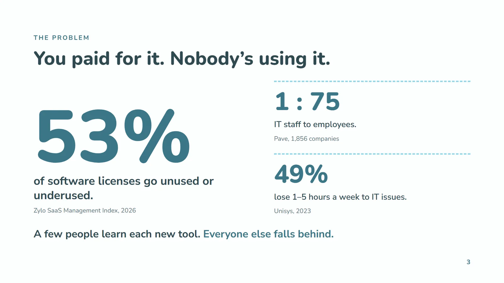
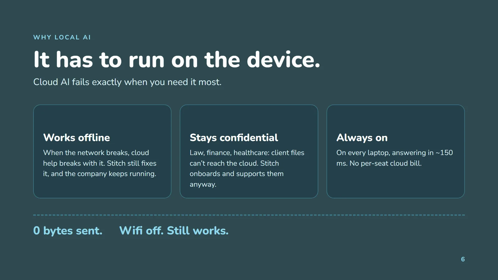
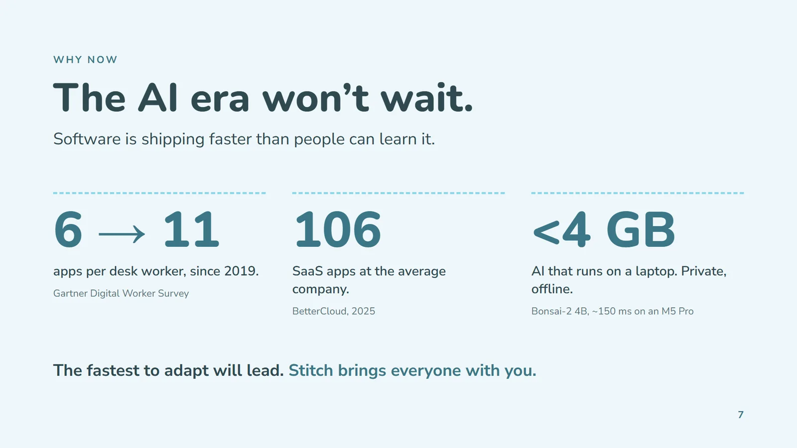
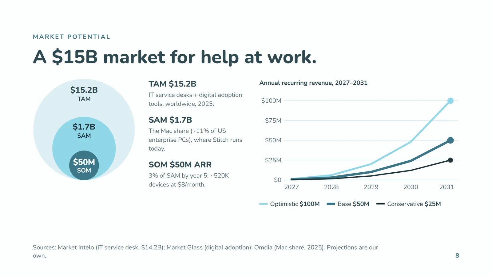
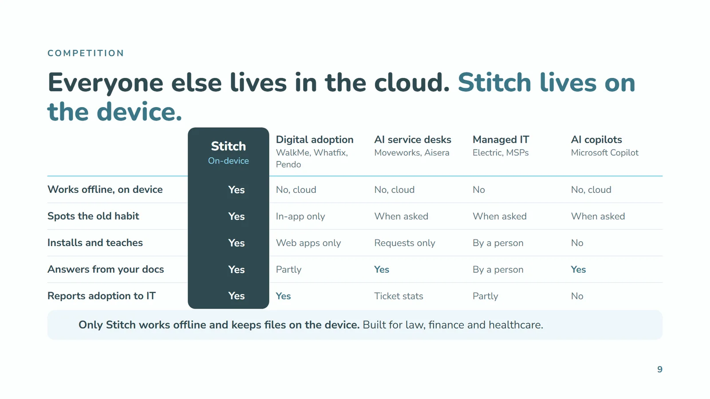
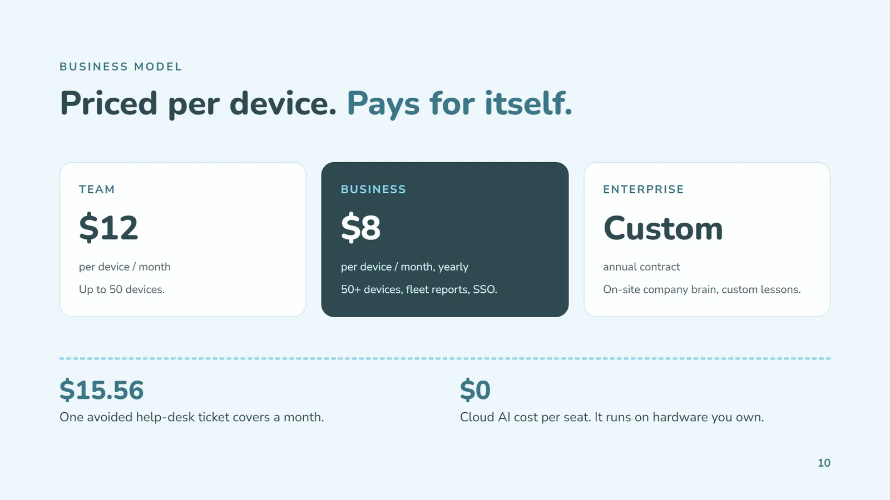
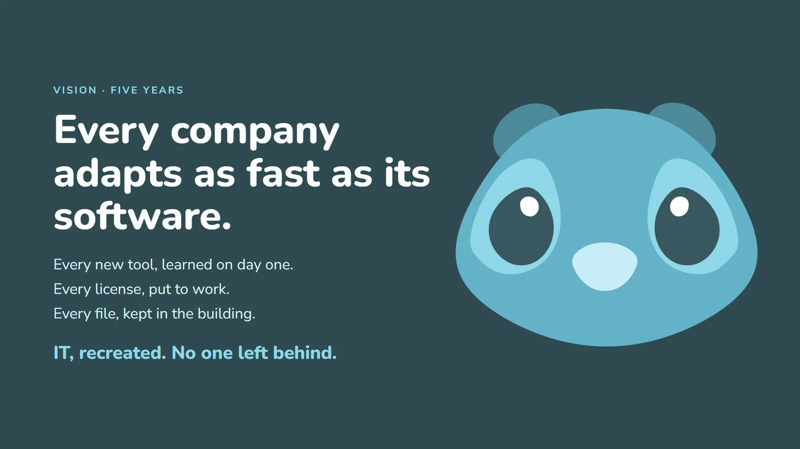
Slides from the pitch deck. Open the full deck.
| Business model | Price |
|---|---|
| Team, up to 50 devices | $12 / device / month |
| Business, 50+ devices, fleet reports, SSO | $8 / device / month, yearly |
| Enterprise, on-site company brain, custom lessons | Custom |
The market analysis sized IT service desks plus digital adoption tools at $15.2B worldwide, the Mac share Stitch can serve today at $1.7B, and a five-year target of $50M a year (3% of that, about 520,000 devices at $8 a month). One avoided help-desk ticket, about $15.56, pays for a seat for a month, and because the model runs on hardware the customer already owns, there's no cloud AI bill per seat. The competitors (WalkMe, Whatfix and Pendo for digital adoption; Moveworks and Aisera for AI service desks; Microsoft Copilot) all run in the cloud and mostly wait to be asked.
My role
- Came up with the idea, researched the problem and wrote the diagnosis the product is built around.
- Built the harness that lets Stitch see the screen and point: forked Clicky with git, removed its cloud calls, and added Accessibility-based pointing and highlighting.
- Connected the local Bonsai-2 4B model and got it running both online and offline.
- Implemented the nudges: the frontmost-window watcher and the rules that match it to a rollout and send people to the new tool.
- Designed the Stitch HQ dashboard's charts and look.
- Made the branding and logo, the pitch deck, the market analysis and the business model, and wrote and directed the demo video.
- Presented Stitch to more than 60 attendees and judges.
Skills applied
On-device LLMs (Bonsai-2 through a local llama.cpp server), grounding small models with a deterministic rules engine, the macOS Accessibility API, extending open-source code with git, git as a sync layer, dashboard and data-visualization design, branding, market sizing, pricing, pitching, and directing AI coding agents with Claude Code.